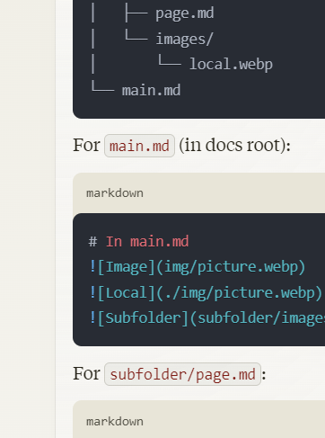

Page Title¶
Table of Contents¶
Introduction¶
Content here...
Details¶
More content...
Conclusion¶
Final content...
header 1¶
asdf asf asdf
header 2¶
asdfasdfrrwer
header 3¶
adsfasdf
header 4¶
dsfasdf
header 5¶
fdsfd fdfd
Comments and Line Spaces¶
comment is visible
<br><br>``<br>
Videos¶
Here is the Apollo Lunar Module descent simulation. Click the play button below to watch:
Images¶
Method 1
 Image Caption
<br><br>``<br>
Method 2
 Image Caption option 2
Image Caption option 2
# Image Caption option 3¶
<br><br>``<br>
Method 3
Bullets¶
-
Main Bullet
- Sub-bullet
- sub
- Sub-bullet
-
Main bullet 1
- Sub-bullet 1.1
- Sub-bullet 1.2
- Sub-sub-bullet 1.2.1
- Sub-sub-bullet 1.2.2
- Main bullet 2
Colored Text¶
This is blue text using HTML